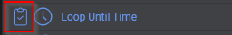
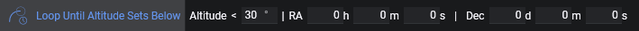
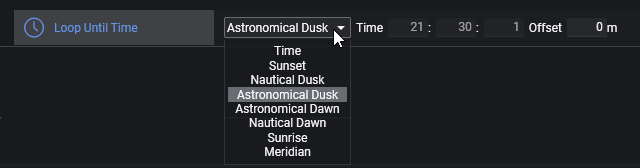
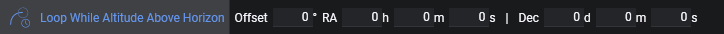
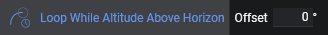
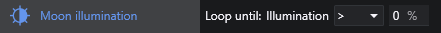

Loop Conditions
Loop conditions will drive the behavior of an instruction set. Without a condition, an instruction set will just process each sequence item inside once and is finished. This behavior will be changed, when loop conditions are attached. When an instruction set has a loop condition attached, it will process its items and loop itself again as long as the attached loop conditions are fulfilled. Once at least one of these loop conditions is not fulfilled anymore (e.g. a condition to loop until a specific time and the time has passed) the current instruction will be finished and afterwards the rest of the instructions inside this set will be skipped as well as the instruction set marked as finished. Conditions will be evaluated constantly in the background, so things like time based conditions or safety monitor conditions will interrupt ongoing instructions once they are no longer fulfilled.
Conditions can be identified by the highlighted icon next to them in the sequencer sidebar.

Loop For Iterations#
Loop the instruction set for the specified amount of iterations.
Loop For Time Span#
Loop the instruction set for the specified amount of seconds.
Loop Until Altitude Sets Below#

For a given target coordinates the condition will loop until the altitude sets below the specified amount. When this condition is part of a "Deep Sky Object Sequence" the coordinates will be inherited by this set and no coordinates need to be entered
Loop Until Time#

Loop an instruction set until a specific point in time. The time can either be set manually or automatically determined based on criteria and an offset specified in minutes.
Time: Manually entered time
Sunset: The time when the sun gets below 0° of the horizon
Civil Dusk: The time when the sun gets below 6° of the horizon
Nautical Dusk: The time when the sun gets below 12° of the horizon
Astronomical Dusk: The time when the sun gets below 18° of the horizon
Astronomical Dawn: The time when the sun gets above 18° of the horizon
Nautical Dawn: The time when the sun gets above 12° of the horizon
Civil Dawn: The time when the sun gets above 6° of the horizon
Sunrise: The time when the sun gets above 0° of the horizon
Meridian: When a target is set this will be the time the target will cross the meridian
| Time source | Rollover time |
|---|---|
| Time | Sunrise |
| Sunset | Sunrise |
| Civil Dusk | Sunrise |
| Nautical Dusk | Sunrise |
| Astronomical Dusk | Sunrise |
| Astronomical Dawn | Sunset |
| Nautical Dawn | Sunset |
| Civil Dawn | Sunset |
| Sunrise | Sunset |
| Meridian | Meridian + 12 |
Note
When using a manual time:
As there is no day attached to the condition, the roll over for a new day happens at noon (similar to the altitude charts). This brings a few advantages to not loop unexpectedly when you are already past the specified time.
Examples:
Sunrise is at 09:00h
Current time: 18:00h | Loop for time: 19:00h -> Loop for one hour
Current time: 20:00h | Loop for time: 19:00h -> Condition will be skipped
Current time: 18:00h | Loop for time: 02:00h -> Loop for eight hours
Current time: 02:00h | Loop for time: 03:00h -> Loop for one hour
Current time: 04:00h | Loop for time: 03:00h -> Condition will be skipped
Current time: 08:00h | Loop for time: 18:00h -> Condition will be skipped because the roll over at 09:00 has not happened yet
When using calculated times for dawn and dusk:
Instead of using noon to roll over to the next day the rollover will instead happen at the "opposite" side of the condition at dawn or dusk. For example when you loop until astronomical dawn, the roll over will be at dusk
Loop While Altitude Above Horizon#

This will loop the instruction set for as long as the specified target is above the horizon. When a custom horizon is set, the custom horizon will be considered as the altitude to be above of. When no custom horizon is set, 0° of altitude will be considered. Furthermore an altitude offset can be specified.
When this condition is part of a "Deep Sky Object Sequence" the coordinates will be inherited by this set and no coordinates need to be entered

Loop While Safe#
Loop for as long as the safety monitor is reporting safe conditions. When the state of the safety monitor switches to unsafe, the currently running instruction will be cancelled and the rest of the instruction set will be skipped.
It is recommended to use this condition in conjunction with another condition, to not run in an endless loop when the safety monitor is reporting safe conditions for the whole time.
Requires a safety monitor device to be connected
Loop While Unsafe#
Loop for as long as the safety monitor is reporting unsafe conditions. When the state of the safety monitor switches to safe, the currently running instruction will be cancelled and the rest of the instruction set will be skipped.
It is recommended to use this condition in conjunction with another condition, to not run in an endless loop when the safety monitor is reporting unsafe conditions for the whole time.
Requires a safety monitor device to be connected
Moon Altitude#
Loop for as long as the moon matches the specified parameters.
Moon Illumination#

Loop for as long as the sun matches the specified parameters.
Sun Altitude#
Loop while the sun altitude is above or below the specified amount of degrees